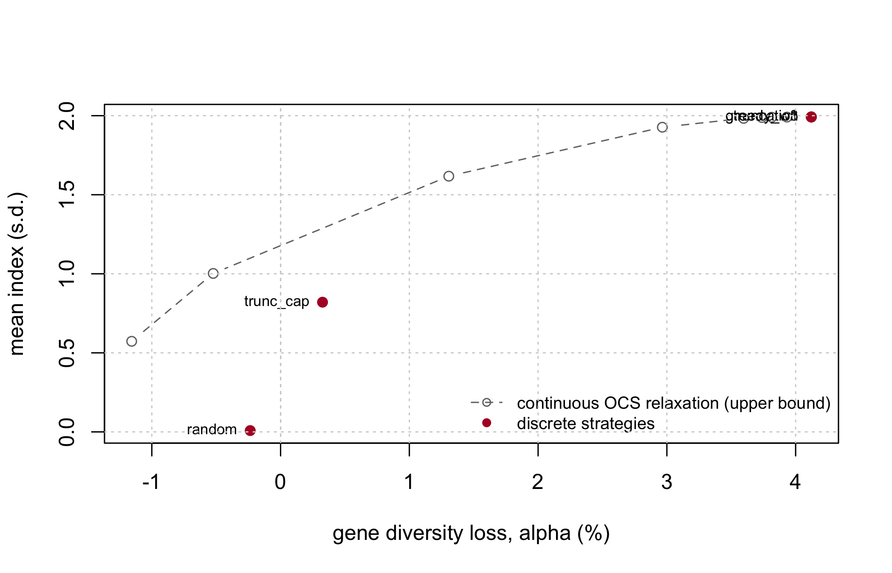
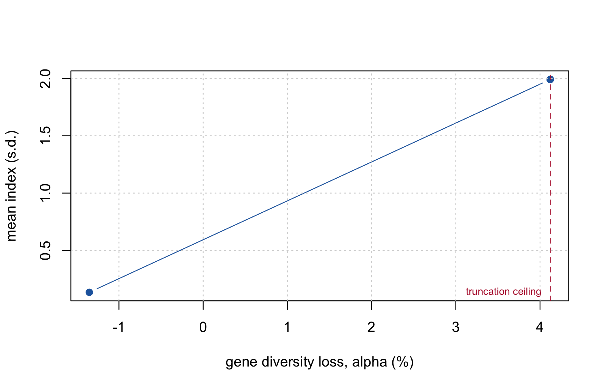

make_fitness
#> function(ctx, n_sel, alpha_max, gd_ref, penalty = 1000) {
#> N <- ctx$N
#> f <- ctx$f
#> ix <- ctx$index
#> function(par) {
#> idx <- decode(par, N, n_sel)
#> gd <- 1 - mean(f[idx, idx])
#> viol <- max(0, (gd_ref - gd) / gd_ref - alpha_max)
#> -(mean(ix[idx]) - penalty * viol) # DEoptim minimizes
#> }
#> }
#> <environment: namespace:hybdiv>9 Optimal contributions and the \(\alpha\) constraint
Everything so far has been measurement. This chapter turns the measurement into a constraint an optimiser can respect, and connects it to the optimal-contribution literature it specialises.
9.1 Constraint, not a weighted sum
With \(\mathbf{u}\) the multi-trait index and \(S\) the selected set of size \(n\):
\[\max_{S,\; |S| = n} \; \frac{1}{n}\sum_{i \in S} u_i \qquad \text{subject to} \qquad \alpha(S) \le \alpha_{\max}.\]
The common alternative, \(\max\; \bar u - \lambda\,\theta_S\), requires calibrating \(\lambda\), which has no direct interpretation. The constraint form preserves an operational meaning: “I accept losing at most \(\alpha_{\max}\) of diversity.” That is a sentence a breeding committee can approve or reject. “Diversity is worth \(\lambda = 3.7\) index units” is not.
The two are not equivalent in practice either. A weighted sum lets the optimiser buy index by spending diversity anywhere on the curve; a constraint fixes the budget and makes the optimiser find the best plan inside it. Since the acceptable loss is a policy decision and the exchange rate is not, the constraint form puts the decision in the right hands.
The violation enters as a proportional penalty, so a plan that overshoots by 10% of the budget is penalised in units the budget defines, whatever the absolute value of \(\alpha_{\max}\).
9.2 Relation to the standard OCS formulation
Gómez-Romano et al. (2016) write the general optimal-contribution problem, for a vector of continuous contributions \(\mathbf{c}\), as
\[\text{minimise} \quad \mathbf{c}'\mathbf{G}\mathbf{c} \qquad \text{subject to} \qquad \mathbf{c}'\mathbf{s} = 0.5,\;\; \mathbf{c}'\mathbf{d} = 0.5,\;\; c_i \ge 0,\]
with \(\mathbf{s}\) and \(\mathbf{d}\) indicating sex and \(\mathbf{G}\) the coancestry matrix chosen for managing diversity – here, \(\mathbf{f}\).
The formulation of this book is that problem restricted to \(c_i \in \{0, 1/n\}\): a fixed number \(n\) of candidates contribute equally, none partially. The minimisation of \(\mathbf{c}'\mathbf{f}\mathbf{c}\) is turned into a constraint and \(\bar u\) is promoted to the objective.
That restriction to equal, all-or-nothing contributions is exactly what makes the problem combinatorial, and what pushes the solution method from convex quadratic programming to a metaheuristic. It is also not arbitrary: a commercial hybrid programme plants a whole plot of a hybrid or does not plant it.
NoteThe sex constraint, in plants
The per-sex sum constraint disappears in hermaphrodite and monoecious species (a single sum to 1) and reappears in dioecious crops and in schemes using cytoplasmic male sterility. In hybrid maize the natural problem is not OCS but optimal cross selection: \(\mathbf{c}\) stops being an individual contribution and becomes a weight per cross, with the between-pool covariance entering explicitly. And there is an extra restriction the animal literature does not have – the maximum number of crosses executable in a field, which makes the problem mixed-integer.
9.2.1 The continuous relaxation as an upper bound
Dropping \(c_i \in \{0, 1/n\}\) back to \(0 \le c_i \le 1/n\) gives the continuous relaxation of this restricted problem. Every discrete solution is feasible under the relaxation, so the relaxation’s optimum is a valid upper bound.
project_capped_simplex
#> function(v, cap) {
#> lo <- min(v) - 1; hi <- max(v)
#> for (i in 1:60) {
#> tau <- (lo + hi) / 2
#> if (sum(pmin(pmax(v - tau, 0), cap)) > 1) lo <- tau else hi <- tau
#> }
#> pmin(pmax(v - (lo + hi) / 2, 0), cap)
#> }
#> <environment: namespace:hybdiv>The cap is what makes the bound valid. Without \(c_i \le 1/n\) the relaxation would put all weight on the single best candidate and the bound would be useless.
lambdas <- 10^seq(-1, 2.5, length.out = 12)
relax <- ocs_relaxation(ctx, n_sel, lambdas)
fmt(as.data.frame(relax), 4)| lambda | index | theta | GD |
|---|---|---|---|
| 0.1000 | 1.9919 | 0.6876 | 0.3124 |
| 0.2081 | 1.9919 | 0.6876 | 0.3124 |
| 0.4329 | 1.9919 | 0.6876 | 0.3124 |
| 0.9006 | 1.9919 | 0.6876 | 0.3124 |
| 1.8738 | 1.9911 | 0.6870 | 0.3130 |
| 3.8986 | 1.9900 | 0.6866 | 0.3134 |
| 8.1113 | 1.9885 | 0.6863 | 0.3137 |
| 16.8761 | 1.9831 | 0.6859 | 0.3141 |
| 35.1119 | 1.9270 | 0.6838 | 0.3162 |
| 73.0527 | 1.6173 | 0.6784 | 0.3216 |
| 151.9911 | 1.0023 | 0.6725 | 0.3275 |
| 316.2278 | 0.5729 | 0.6704 | 0.3296 |
Sweeping \(\lambda\) traces the merit-versus-diversity frontier. Each row is the best continuous plan at that exchange rate, and therefore an upper bound on what any discrete plan of the same diversity can achieve.
null <- null_distribution(ctx, n_sel, B = 400, B_full = 60)
a_relax <- (null$gd_ref - relax[, "GD"]) / null$gd_ref
sels <- list(random = sel_random(ctx, n_sel),
trunc_cap = sel_truncation_cap(ctx, n_sel),
greedy_w1 = sel_greedy(ctx, n_sel, w = 1),
greedy_w3 = sel_greedy(ctx, n_sel, w = 3),
truncation = sel_truncation(ctx, n_sel))
pts <- t(sapply(sels, function(s)
c(alpha = alpha_loss(s, ctx, null$gd_ref), index = mean_index(s, ctx))))
plot(a_relax * 100, relax[, "index"], type = "b", pch = 1, lty = 2, col = "grey45",
xlab = "gene diversity loss, alpha (%)", ylab = "mean index (s.d.)",
xlim = range(c(a_relax, pts[, "alpha"]) * 100),
ylim = range(c(relax[, "index"], pts[, "index"])))
points(pts[, "alpha"] * 100, pts[, "index"], pch = 19, col = "#b2182b")
text(pts[, "alpha"] * 100, pts[, "index"], rownames(pts), pos = 2, cex = 0.7)
abline(v = 0, lty = 3)
legend("bottomright", c("continuous OCS relaxation (upper bound)", "discrete strategies"),
col = c("grey45", "#b2182b"), pch = c(1, 19), lty = c(2, NA), bty = "n", cex = 0.8)
grid()
WarningToo few iterations gives an “upper bound” below the discrete optimum
The relaxation is solved by projected gradient. Under-converged, it returns a value smaller than the discrete optimum – which is useless, and worse, silently so. The default of 4000 iterations is the minimum that converged in testing; re-check it whenever the dataset changes.
short <- ocs_relaxation(ctx, n_sel, lambdas = 10, iters = 50)
long <- ocs_relaxation(ctx, n_sel, lambdas = 10, iters = 4000)
c(index_50_iters = short[, "index"], index_4000_iters = long[, "index"],
greedy_w3 = mean_index(sels$greedy_w3, ctx))
#> index_50_iters.index index_4000_iters.index greedy_w3
#> 1.605937 1.987272 1.9919379.3 Setting \(\alpha_{\max}\)
The limit should not be chosen a priori. Pure truncation – the greediest possible selection – defines the maximum attainable \(\alpha\). If that ceiling sits below your intended limit, the constraint restricts nothing.
attainable <- alpha_loss(sel_truncation(ctx, n_sel), ctx, null$gd_ref)
c(attainable_ceiling = attainable,
a_5pct_limit_would_be_active = attainable > 0.05,
a_1pct_limit_would_be_active = attainable > 0.01)
#> attainable_ceiling a_5pct_limit_would_be_active
#> 0.04121618 0.00000000
#> a_1pct_limit_would_be_active
#> 1.00000000stage2_select() computes this ceiling automatically and warns about any requested \(\alpha\) above it, rather than silently returning an unconstrained solution that looks constrained.
The correct procedure is to trace the frontier and choose its knee:
ws <- c(0, 0.25, 0.5, 0.75, 1, 1.5, 2, 3, 5, 8, 12)
front <- do.call(rbind, lapply(ws, function(w) {
s <- sel_greedy(ctx, n_sel, w = w)
data.frame(w = w, alpha = alpha_loss(s, ctx, null$gd_ref),
index = mean_index(s, ctx), Ne_par = ne_parents(s, ctx))
}))
plot(front$alpha * 100, front$index, type = "b", pch = 19, col = "#2166ac",
xlab = "gene diversity loss, alpha (%)", ylab = "mean index (s.d.)")
abline(v = attainable * 100, lty = 2, col = "#b2182b")
text(attainable * 100, min(front$index), "truncation ceiling", pos = 2, cex = 0.7,
col = "#b2182b")
grid()
fmt(front, 4)| w | alpha | index | Ne_par |
|---|---|---|---|
| 0.00 | -0.0135 | 0.1343 | 37.3057 |
| 0.25 | 0.0412 | 1.9919 | 13.0199 |
| 0.50 | 0.0412 | 1.9919 | 13.0199 |
| 0.75 | 0.0412 | 1.9919 | 13.0199 |
| 1.00 | 0.0412 | 1.9919 | 13.0199 |
| 1.50 | 0.0412 | 1.9919 | 13.0199 |
| 2.00 | 0.0412 | 1.9919 | 13.0199 |
| 3.00 | 0.0412 | 1.9919 | 13.0199 |
| 5.00 | 0.0412 | 1.9919 | 13.0199 |
| 8.00 | 0.0412 | 1.9919 | 13.0199 |
| 12.00 | 0.0412 | 1.9919 | 13.0199 |
9.4 A caveat carried over from the OCS literature
Gómez-Romano et al. (2016) show that the predicted rate of coancestry in the next generation, \(E(\Delta f_{t+1}) = (\mathbf{c}'\mathbf{G}_t\mathbf{c} - f_t)/(1 - f_t)\), is systematically biased downward relative to the coancestry actually realised after offspring are generated – by roughly a factor of two in their simulations with small candidate pools, shrinking as the pool grows. The bias arises because \(\mathbf{c}'\mathbf{G}\mathbf{c}\) is an expectation over Mendelian segregation, and the realised draw carries its own sampling variance on top of that expectation.
This does not affect the \(\theta_S\) computed in this book. \(\mathbf{f}\) is measured on real marker genotypes of an already-realised hybrid population; there is no forward-prediction step to bias.
It becomes relevant the moment the pipeline is extended to plan a further generation from the selected hybrids – to predict their offspring’s coancestry from a contribution vector. At that point the naive \(\mathbf{c}'\mathbf{f}\mathbf{c}\) prediction should be expected to underestimate realised coancestry, and the margin built into \(\alpha_{\max}\) must account for it.
9.5 Quadratic programming, when contributions are continuous
Where the problem genuinely is continuous – composing a synthetic, assembling a core collection, setting seed proportions – solve it as a quadratic programme rather than with a metaheuristic. That is Chapter 2’s optimal_contributions(), with ocs_quadprog() adding the merit term:
sub <- sample.int(ctx$n_lines, 20)
fLs <- ctx$fL[sub, sub]
merit <- as.vector(scale(rnorm(20)))
front_qp <- do.call(rbind, lapply(10^seq(-1, 2, length.out = 8), function(lam) {
o <- ocs_quadprog(fLs, merit, lambda = lam, upper = 0.20)
data.frame(lambda = lam, merit = o$merit, coancestry = o$coancestry,
n_used = sum(o$c_i > 1e-6))
}))
fmt(front_qp, 4)| lambda | merit | coancestry | n_used |
|---|---|---|---|
| 0.1000 | 1.3430 | 0.7236 | 5 |
| 0.2683 | 1.3430 | 0.7236 | 5 |
| 0.7197 | 1.3427 | 0.7232 | 6 |
| 1.9307 | 1.3360 | 0.7172 | 6 |
| 5.1795 | 1.3330 | 0.7161 | 6 |
| 13.8950 | 1.2644 | 0.7087 | 8 |
| 37.2759 | 0.7718 | 0.6881 | 17 |
| 100.0000 | 0.3437 | 0.6806 | 20 |
Note the upper = 0.20 cap: an operational ceiling on how much any single line may contribute. Caps of this kind are usually easier to defend than the \(\lambda\) that produced them, and they are the continuous analogue of the per-line usage cap that Chapter 10 enforces in the decoder.
As \(\lambda\) falls the solution concentrates on fewer sources – the same mechanism, in continuous form, that makes \(N_{e,\text{par}}\) a necessary second constraint in the discrete problem.
9.6 What belongs in the inner loop
The optimiser performs on the order of \(10^5\) to \(10^6\) evaluations, so the cost per call decides what goes into the objective and what waits for post-hoc validation.
fmt(cost_per_eval(ctx, n_sel, reps = 20), 1)| metric | us_per_eval |
|---|---|
| theta_group | 0 |
| theta_from_freq | 200 |
| ne_parents | 0 |
| alleles_lost | 150 |
| ENE | 50 |
| ANE | 400 |
| eff_dim | 100 |
| Gst | 1350 |
\(\theta\) by the matrix route (or, better, the line route of Section 7.1) and \(N_{e,\text{par}}\) go into the objective. Allelic richness, A-NE and \(G_{st}\) are computed once, on the final solution. This is the same conclusion Chapter 7 reached from the production-scale benchmark, reproduced here at book scale so it can be re-run on your own data.